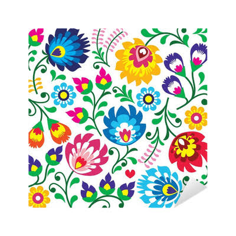
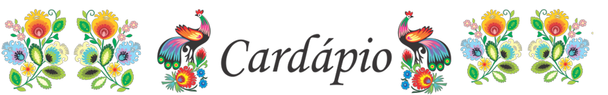
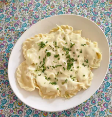
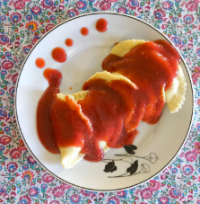
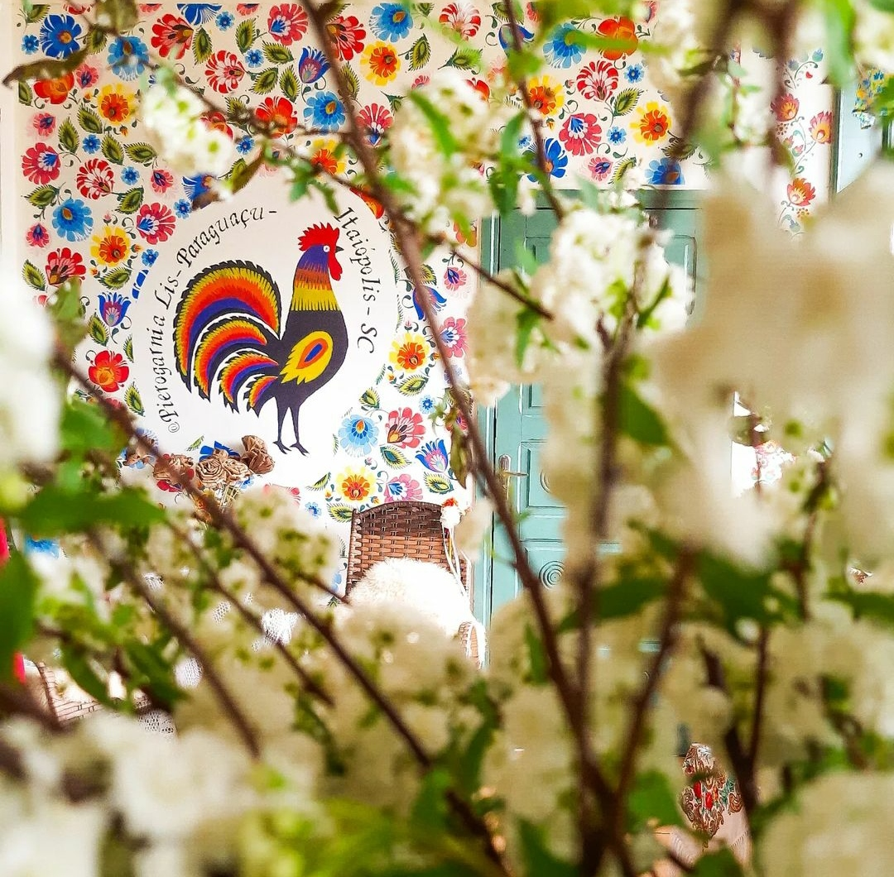

Witamy! Bem-vindos
Pierogarnia Lis
Restaurante Culinária Tradicional Polonesa!



Nossa história
A Pierogarnia Lis nasceu de uma receita de família e de uma vontade simples: trazer para Itaiópolis um pouco da cultura. Cada massa é aberta à mão, cada recheio é preparado no dia, e as flores de wycinanki que decoram a nossa fachada contam um pouco dessa história.
Aqui você encontra pierogi salgados e doces, bebidas tradicionais e um lugar aconchegante para ficar.
O que é um pierogi?
O pieróg (no plural: pierogi) é um dos símbolos da culinária polonesa. É uma massa que pode ser cozida ou frita, com recheios salgados ou doces. A palavra vem de "pieróg", que significa "bolinho". Na Polônia, cada região tem sua versão: que vai de recheios de carne a queijo, frutas silvestres, cogumelos e repolho.
Por que "Pierogarnia Lis"?
Em polonês, "Pierogarnia" é o lugar onde se faz e vende pierogi como "padaria" para pão, mas para pierogi. É um termo afetivo, usado por quem cresceu com essa comida. Ao escolher esse nome, queremos dizer: aqui não é só um restaurante, é uma casa de pierogi. E o "Lis" raposa em Tradução, é o sobrenome da nossa família.
A tradição das wycinanki
As flores coloridas que você vê no nosso logo, no interior do restaurante e no site são wycinanki — recortes de papel tradicionais da Polônia, especialmente das regiões de Kurpie e Łowicz. Antigamente, as mulheres recortavam essas flores para decorar paredes, janelas e presentes de casamento. Cada flor tinha um significado: rosas para amor, girassóis para sol e prosperidade, tulipas para esperança.
Ao usar wycinanki, estamos conectando a comida com a arte popular polonesa. duas tradições que, juntas, contam a história de um povo que valoriza a beleza no cotidiano.
Nossa missão
Queremos que a Pierogarnia Lis seja um ponto de encontro entre a cultura polonesa e a cidade de Itaiópolis no Alto Paraguaçu, a Capital Catarinense da Cultura Polonesa. Não só um lugar para comer bem, mas um espaço onde você pode aprender sobre a tradição e levar um pedacinho da Polônia para casa.

Onde estamos
R. Alfredo Schneder, 1536Paraguaçu, Itaiópolis - SC, 89340-000
- Segunda a Quinta fechado
- SextaSomente sob Reserva!
- Sábado 15h às 22h
- Domingo 12h às 15h
Tel: +55 41 9634-8324
Fale com a gente
Reservas, encomendas para eventos.